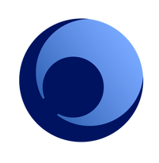

Context
Consider the ai_in_finance.json file, containing 4K+ articles dealing with the topics of AI & financial services from The Wall Street Journal and The Financial Times. For a description of the corpus, see Lanzolla, Gianvito, Simone Santoni, and Christopher Tucci. "Unlocking value from AI in financial services: strategic and organizational tradeoffs vs. media narratives." In Artificial Intelligence for Sustainable Value Creation. Edward Elgar Publishing, 2021.
Problem
Use the doc2vec — as per Training a doc2vec embedding with Gensim — to:
get document-level representations for the 4K+ articles in the corpus
visualize the position of the individual documents in the vector space (equivalently to Mapping documents onto the vector space)
Then, compare and contrast the results achieved the doc2vec algorithm against the results achieved with the BoW or TFIDF approach — see Mapping documents onto the vector space. Can you spot any pairs of documents that are similar for the doc2vec approach and not so similar (or not similar at all) in terms of the Bow or TFIDF representations?